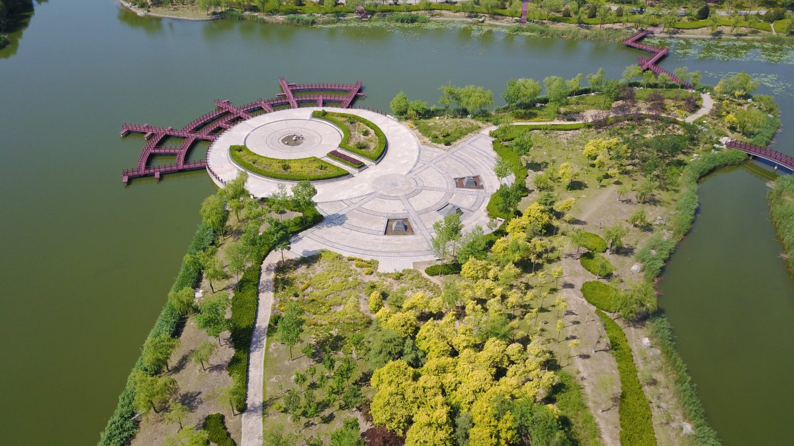

潍坊景点
首页
潍坊美食
潍坊风筝
潍坊景点
——潍坊景点——
——总述——
潍坊的景点有很多，为您介绍以下几个：
杨家埠民间艺术大观园
十笏园
浞河景区
——杨家埠民间艺术大观园——
杨家埠民间艺术大观园（原杨家埠风筝厂），位于山东省潍坊市寒亭区；
风筝场是集风筝生产、年画印刷与民俗旅游为一体的民间艺术大观园。
——十笏园——
十笏园，又名丁家花园，位于山东省潍坊市潍城区胡家牌坊街49号，面积约2000平方米；
因占地非常少，时人喻之为“十个笏板”，故得名“十笏园”。
——浞河景区——
吉光片羽处 千古浞河风 风筝之都,日新月异；
千古浞河,旧貌新颜。浞河,从远古走来,在历史和传说之间跋涉着。
